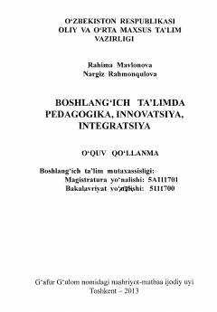

BTBoshlang'ich ta'lim uchun pedagogika, innovatsiya va integratsiyani o'rgatuvchi qo'llanma.
Ushbu o'quv qo'llanma boshlang'ich ta'lim mutaxassisligi magistratura va bakalavr yo'nalishi talabalari uchun mo'ljallangan bo'lib, pedagogika, innovatsiya va integratsiya bo'limlarini qamrab oladi. Qo'llanmada boshlang'ich ta'lim pedagogikasining mazmuni, maqsad va vazifalari, tarbiyaning ijtimoiy mohiyati hamda zamonaviy pedagogik yondashuvlar yoritilgan. Sharq mutafakkirlari merosi va mustaqillik mafkurasi g'oyalari asosida bayon etilgan.